Tema 2
Comunícate, comparte y trabaja en equipo en Internet.
←→ para moverte · B buscar · P pantalla completa
Basado en el curso «Soy competente digital», de CyL Digital (Junta de Castilla y León), y en la demo del examen de tuCertiCyL. Material no oficial. Licencia CC BY-NC-SA 4.0.
Tema 2
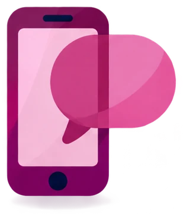
Llamadas, mensajes y correo
Adjuntos y WhatsApp
Certificado digital, DNIe, Cl@ve y trámites
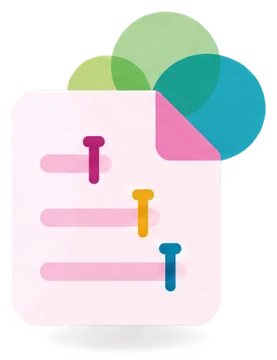
Documentos compartidos, roles y herramientas
Netiqueta, respeto y privacidad
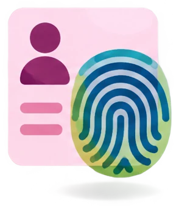
Lo que publicas tú y lo que publican de ti
2.1
En el examen: 3 preguntas. En la demo: relacionar el SMS, el chat y el correo con lo que hace cada uno.
Mucho de esto ya lo usas. El examen pregunta los nombres exactos.
2.1 · Interactuar
En muchos móviles Android, la app Teléfono tiene 4 pestañas: Favoritos, Recientes, Contactos y Teclado. La app Teléfono del iPhone es parecida.
En algunos móviles, como los Google Pixel, Favoritos y Recientes están juntos en la pestaña Inicio.
2.1 · Interactuar
La agenda del móvil (la app Contactos) guarda el nombre y el número de las personas que conoces.
Un número que te ha llamado, desde Recientes
2.1 · Interactuar
El SMS (servicio de mensajes cortos) es un mensaje de texto que va por la red de telefonía.
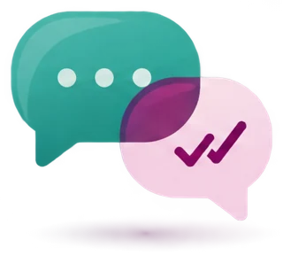
La mensajería instantánea envía mensajes por Internet (datos móviles o wifi). Ejemplos: WhatsApp y Telegram.
2.1 · Interactuar
Abre la conversación. Los mensajes enviados salen a la derecha. Los recibidos, a la izquierda.
| Marca de WhatsApp | Qué significa |
|---|---|
| Enviado. Todavía no le ha llegado: no tiene cobertura o tiene el móvil apagado. | |
| Entregado en su móvil. Todavía no lo ha leído. | |
| Leído. |
Los SMS se ven igual en la app Mensajes: una conversación por persona.
2.1 · Interactuar
La VoIP (voz sobre IP) es la transmisión de la voz por Internet en lugar de por la red de teléfono tradicional.
Ejemplo: una llamada de WhatsApp o de Teams.
La videoconferencia (o videollamada) es una comunicación con voz e imagen en directo, por Internet, entre 2 o más personas.
Necesitas un dispositivo con cámara y micrófono, y conexión a Internet.
2.1 · Interactuar
Funciones habituales: compartir pantalla, chat, grabar la reunión, sala de espera y contraseña de la reunión.
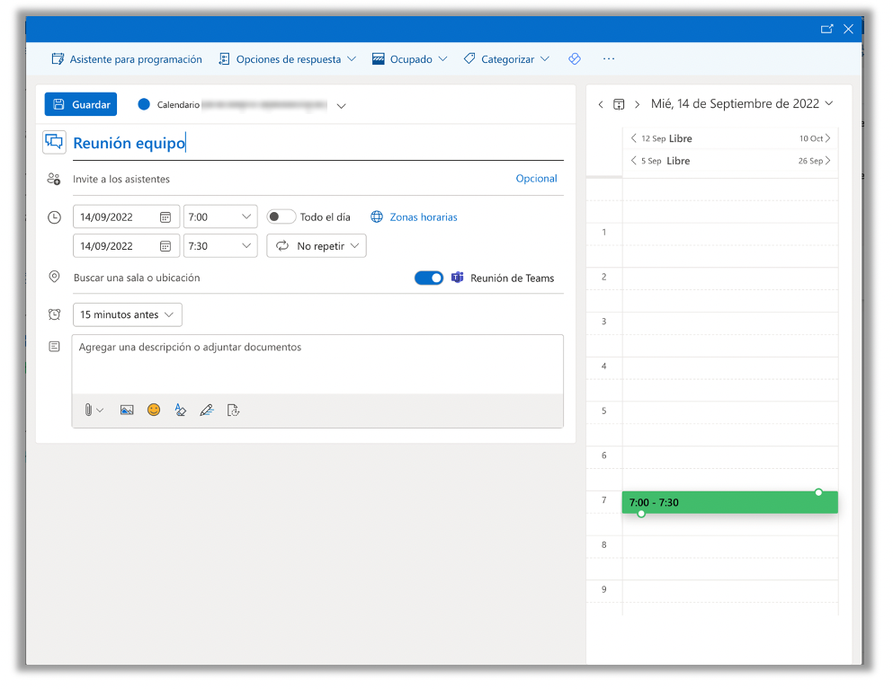
2.1 · Interactuar
| Campo | Para qué sirve |
|---|---|
| 1Para | La persona que recibe el correo. |
| 2CC (con copia) | Personas que reciben una copia. Todos ven sus direcciones. |
| 3CCO (con copia oculta) | Personas que reciben el correo sin que nadie vea su dirección. Úsalo si escribes a muchas personas que no se conocen. |
| 4Asunto | El tema del correo en pocas palabras. |
| 5Cuerpo | El mensaje. |
| 6Adjunto | Un archivo que va con el correo (icono del clip). |
| 7Firma | Tu nombre y tus datos, al final. |
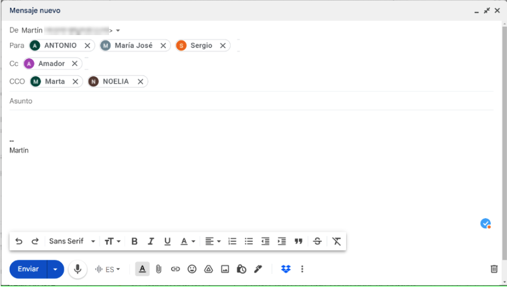
1234567Una dirección de correo tiene la forma usuario@dominio. alumno.prueba.cyl@gmail.com es el usuario «alumno.prueba.cyl» de Gmail. En De sale tu dirección.
2.1 · Interactuar
2.1 · Interactuar
También están en la flecha y en ⋮, arriba a la derecha del mensaje.
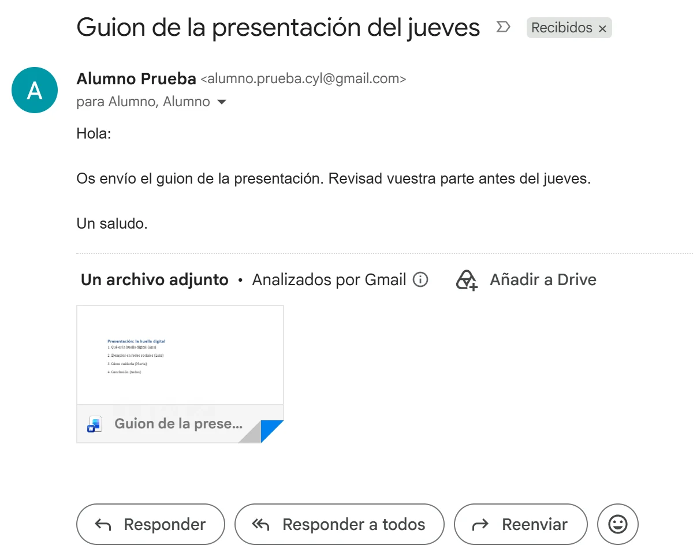
En Outlook 2016 están en la pestaña Inicio, en el grupo Responder.
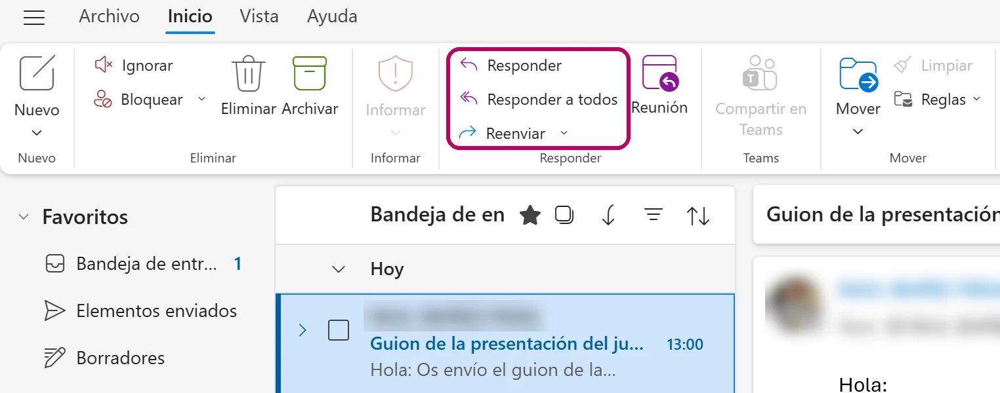
2.1 · Interactuar
| Medio | Cómo funciona | Cuándo lo usas |
|---|---|---|
| SMS | Se envía desde un dispositivo móvil, sin Internet. | Un aviso corto cuando no tienes datos. |
| Mensajería instantánea y chat | Se produce una comunicación instantánea (en tiempo real). En una sala de chat también hablas con personas que no están en tus contactos. | Una conversación rápida con amigos o con un grupo. |
| Correo electrónico | La otra persona lo lee cuando quiere. Antes de enviarlo, tienes que escribir el destinatario y el asunto. | Mensajes formales, con archivos y no urgentes: al profesorado, a una empresa, a la Administración. |
| Llamada y videollamada | Voz, o voz e imagen, en directo. | Temas urgentes o difíciles de explicar por escrito. |
2.1 · Así lo pregunta el examen · pregunta 9 de la demo
Pregunta 9 de la demo de tuCertiCyL (Junta de Castilla y León).
2.1 · Interactuar
2.2
En el examen: 3 preguntas. En la demo sale una simulación: enviar un archivo por correo.
2.2 · Compartir
Un archivo adjunto es un archivo que envías dentro de un correo: un PDF, una foto, un documento…
Gmail (en el navegador)
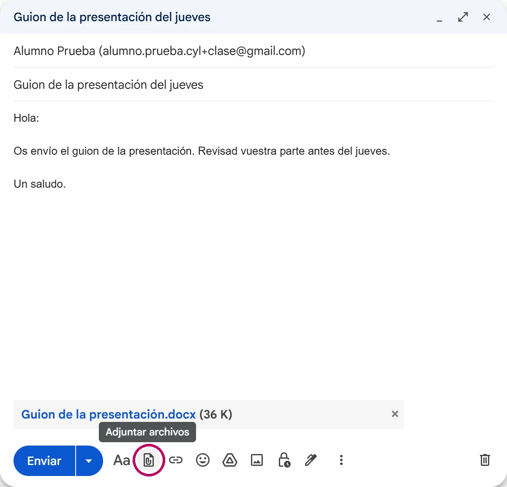
2.2 · Compartir
En Outlook 2016 la opción se llama Examinar este equipo. También puedes arrastrar el archivo desde el Explorador de archivos hasta la ventana del mensaje.
Gmail admite 25 MB de adjuntos en cada correo. Si el archivo es mayor, Gmail lo sube a Google Drive y envía un enlace.
Outlook.com admite 20 MB.
2.2 · Compartir
Es el camino corto de la pregunta 4 de la demo. Las pantallas son de Windows 10, como en el examen.
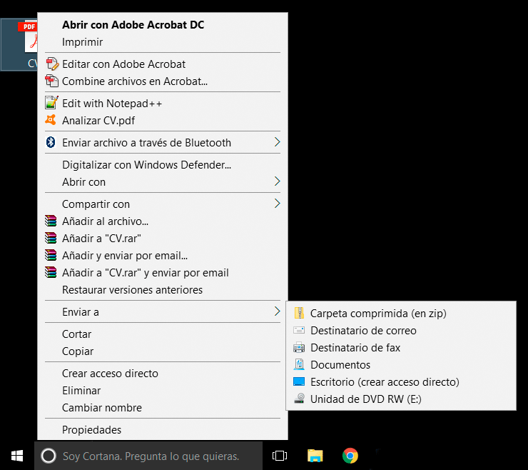
2.2 · Compartir
Windows 11 tiene además el botón Compartir en el menú del clic derecho. Envía el archivo con Outlook o con otra aplicación.
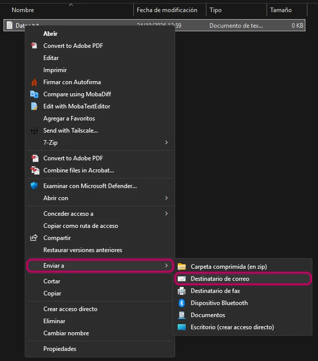
2.2 · Compartir
En un chat, pulsa el clip (Adjuntar). Está a la derecha del cuadro Mensaje.
| Opción | Qué envía |
|---|---|
| Documento | Un archivo: PDF, Word, Excel, zip… Hasta 2 GB. |
| Cámara | Una foto o un vídeo que haces en ese momento. |
| Galería | Fotos y vídeos guardados. Con el icono 1 (Ver una vez), la otra persona solo puede verlos una vez. |
| Audio | Un archivo de sonido o de música guardado. |
| Ubicación | Un punto del mapa. |
| Contacto | Los datos de una persona de tu agenda. |
| Encuesta | Una pregunta con opciones para un grupo. |
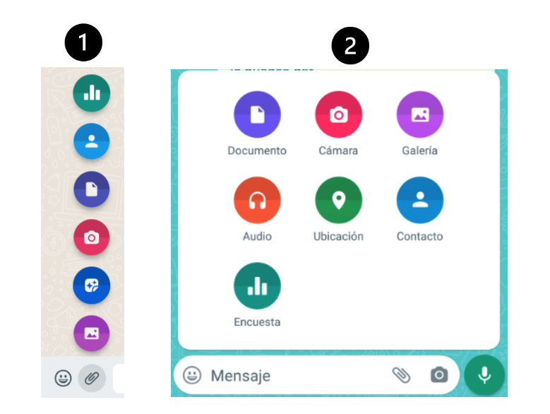
El icono de la cámara del cuadro Mensaje abre la cámara directamente. El orden de las opciones cambia según la versión.
2.2 · Compartir
Para grabar sin mantener el dedo, desliza hacia arriba hasta el candado. Para cancelar, desliza hacia la izquierda.
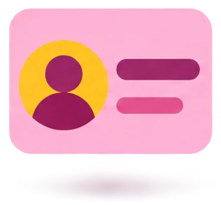
La otra persona recibe el nombre y el número. Puede guardarlo en su agenda con un toque.
2.2 · Compartir
2.2 · Así lo pregunta el examen · pregunta 4 de la demo
Pantallas de la pregunta 4 de la demo de tuCertiCyL (Junta de Castilla y León).
2.2 · Compartir
2.3
En el examen: 3 preguntas. En la demo: para qué sirve el PIN del DNI electrónico.
2.3 · Participación ciudadana
Una sede electrónica es la web oficial de un organismo público donde haces trámites por Internet. Por ejemplo, la de la Agencia Tributaria, la Seguridad Social o la DGT.
Para hacer un trámite tienes que demostrar quién eres. Tienes 3 formas:
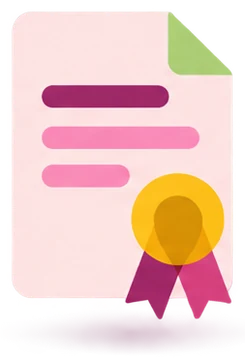
Un archivo instalado en tu ordenador o en tu móvil.
Lo emite la FNMT.
Solo necesitas el navegador.
El chip de tu DNI.
Lo expide la Policía Nacional.
Necesitas un lector de tarjetas o un móvil con NFC, y el PIN.
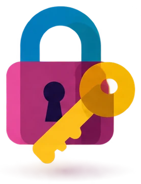
Una clave del Gobierno de España: un PIN o una contraseña.
Te registras una vez.
Necesitas tu móvil.
2.3 · Participación ciudadana
Un certificado digital es un documento electrónico con tus datos, emitido por una entidad oficial. Te identifica en Internet y te permite firmar documentos.
Cómo se obtiene (sede de la FNMT)
1Lo solicitas por Internet y recibes un código por correo.
2Demuestras quién eres en una oficina de registro, o con tu DNIe.
3Lo descargas en el mismo ordenador y navegador.
2.3 · Participación ciudadana
El DNIe es el DNI con chip. Lo expide la Policía Nacional.
El chip guarda 2 certificados:
2.3 · Participación ciudadana
El PIN del DNIe es la contraseña del chip. Sin el PIN no puedes identificarte ni firmar en Internet con el DNIe.
2.3 · Participación ciudadana
Cl@ve es el sistema del Gobierno de España para identificarte en las sedes electrónicas con una clave. No necesitas certificado ni lector de tarjetas.
Te registras una vez: por videollamada, con certificado o DNIe, o en una oficina. Se usa en la Agencia Tributaria, la Seguridad Social, el SEPE y la DGT.
Un código temporal que recibes en la app Cl@ve (antes, app Cl@ve PIN) o por SMS. Sirve para un trámite y caduca.
Usuario (tu DNI o NIE) y contraseña. Para quien hace trámites a menudo.
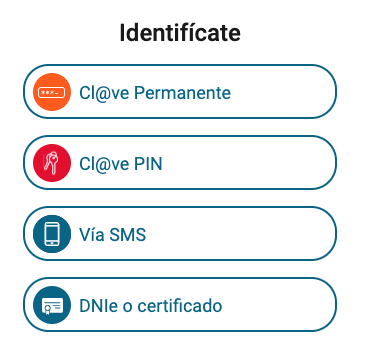
2.3 · Participación ciudadana
Muchos trámites se hacen en persona: renovar el DNI, ir al médico o inscribirte para buscar empleo. En la web del organismo encuentras lo que necesitas para ir.
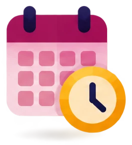
Pide día y hora. Así no esperas en la oficina.
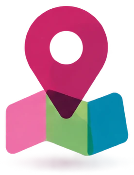
Busca la oficina más cercana y cuándo abre.
Lo que tienes que llevar: DNI, tarjeta sanitaria, un formulario…
Las empresas también lo publican. Por ejemplo, en la web o en la app de tu banco tienes el buscador de oficinas y cajeros, con su horario.
2.3 · Participación ciudadana
| Trámite | Organismo o entidad |
|---|---|
| Cita con el médico de familia o la enfermera | Sacyl (sanidad pública de Castilla y León) |
| Hacer o renovar el DNI o el pasaporte | Policía Nacional |
| Inscribirte como demandante de empleo, orientación y cursos | ECYL (Servicio Público de Empleo de Castilla y León) |
| Prestación por desempleo (el paro) | SEPE (Servicio Público de Empleo Estatal) |
| Pensiones y Tarjeta Sanitaria Europea | Seguridad Social |
| Ayuda con la declaración de la renta | Agencia Tributaria (Hacienda) |
| Examen o carnet de conducir | DGT (Dirección General de Tráfico) |
| Abrir una cuenta o hablar con tu gestor | Tu banco |
2.3 · Participación ciudadana
Ejemplo: una cita con tu médico de familia en Sacyl.
2.3 · Así lo pregunta el examen · pregunta 5 de la demo
Pregunta 5 de la demo de tuCertiCyL (Junta de Castilla y León).
2.3 · Participación ciudadana
2.4
En el examen: 3 preguntas. En la demo sale un reto: encontrar un comentario en un documento de Word.
2.4 · Colaborar
El trabajo colaborativo es el trabajo que hacen varias personas juntas sobre un mismo documento o proyecto. Con las TIC (tecnologías de la información y la comunicación) se hace en la nube.
Varias personas escriben a la vez en el mismo archivo. Cada una tiene un cursor de un color.
No hay que enviar copias por correo.
Desde cualquier lugar y dispositivo con Internet. Ahorras desplazamientos.
No hay botón Guardar.
Muestra quién cambió cada parte. Puedes recuperar una versión anterior.
Hablas con tu grupo dentro del mismo documento.
2.4 · Colaborar
| Herramienta | Para qué sirve |
|---|---|
| Google Drive: Documentos, Hojas de cálculo y Presentaciones de Google | Documentos compartidos. Con una cuenta de Google tienes 15 GB gratis. |
| OneDrive: Word, Excel y PowerPoint en la web (Microsoft 365) | Documentos compartidos. Con una cuenta de Microsoft tienes 5 GB gratis. |
| Microsoft Teams | Equipos con chat, canales, archivos y videollamadas. Lo usan centros educativos y empresas. |
| Google Calendar | Calendario compartido. |
| Doodle | Votar la fecha de una reunión. |
| Trello | Tablero de tareas en columnas: «Por hacer», «En proceso» y «Hecho». |
| OneNote | Bloc de notas compartido. Se organiza en secciones, y cada sección en páginas. |
| Slack | Mensajería para equipos de trabajo. |
Office 365 es el nombre antiguo de Microsoft 365. Jamboard, la pizarra de Google, cerró a finales de 2024.
2.4 · Colaborar
Un rol es lo que cada persona puede hacer en un documento compartido.
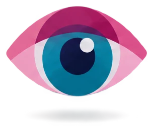
Solo puede ver el documento.
Google Drive: Lector.
OneDrive: Puede ver.
Ve el documento y escribe comentarios o sugerencias. No cambia el texto.
Google Drive: Comentador.
Word en la web: Puede revisar.
Cambia el contenido.
Google Drive: Editor.
OneDrive: Puede editar.
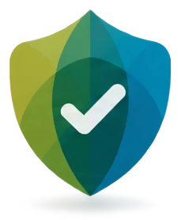
Coordina: reparte el trabajo, revisa, acepta o rechaza los cambios y decide quién entra.
Suele ser el propietario: la persona que creó el archivo.
2.4 · Colaborar
Otra forma: en Acceso general, cambia Restringido por Cualquier persona con el enlace. Elige el rol y pulsa Copiar enlace. Pégalo en un correo o en WhatsApp.
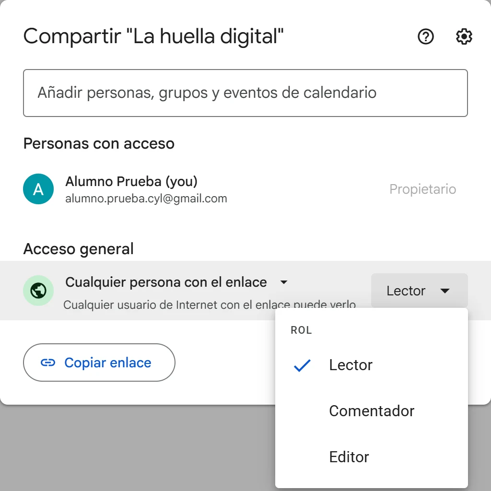
2.4 · Colaborar
Un comentario es una nota pegada a una parte del texto. No cambia el texto. Sirve para opinar, preguntar o proponer.
Los comentarios salen en el margen derecho, con el nombre de quien los escribe. En algunas versiones de Word solo salen su inicial y un número. Por ejemplo, [A1] es el primer comentario de Ana.
2.4 · Colaborar
El control de cambios marca en color lo que cada persona añade o borra. Así otra persona lo puede aceptar o rechazar.
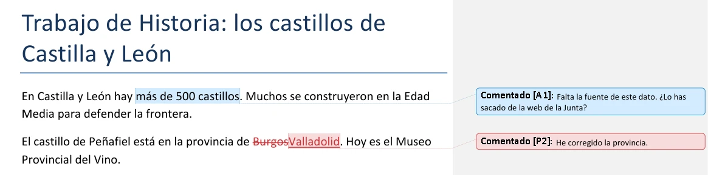
[A1] es un comentario de Ana. [P2] es un comentario de Pablo: ha cambiado «Burgos» por «Valladolid». La palabra borrada sale tachada y la nueva, subrayada.
2.4 · Colaborar
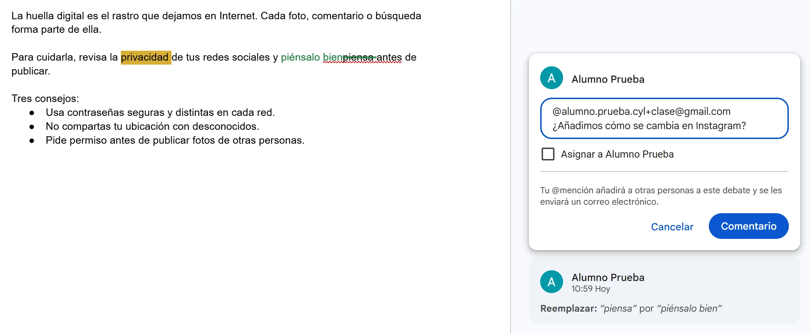
2.4 · Colaborar
«Falta la fuente de este dato. ¿La añades al final?»
«Esto está fatal.»
2.4 · Colaborar
Un grupo de contactos es una lista de direcciones con un nombre. Escribes el nombre del grupo en Para y el correo llega a todos.
2.4 · Colaborar
Teams: un equipo por grupo y un canal por tema. Telegram: en los grupos escriben todos; en los canales solo publica el administrador.
2.4 · Así lo pregunta el examen · pregunta 6 de la demo
Pregunta 6 de la demo de tuCertiCyL (Junta de Castilla y León). Archivo de la demo.
2.4 · Colaborar
2.5
En el examen: 3 preguntas. En la demo: subir a una red social una foto en la que sale otra persona.
2.5 · Comportamiento digital
La netiqueta es el conjunto de normas de buena conducta en Internet: en el correo, los chats, los foros y las redes sociales.
La palabra une «net» (red, en inglés) y «etiqueta» (normas de buena educación).
Cada sitio tiene además sus propias normas: un grupo de WhatsApp, un foro, una red social. Léelas antes de participar.
2.5 · Comportamiento digital
| Norma | Mal | Bien |
|---|---|---|
| No escribas todo en mayúsculas: se lee como un grito. | «MAÑANA HAY EXAMEN» | «Mañana hay examen» |
| Cuida la ortografía y no abuses de las abreviaturas. | «q tl, xfa pasa l trabajo» | «¿Qué tal? Por favor, pásame el trabajo» |
| Llama a los demás por su nick (su apodo en el foro o la red), no por su nombre real. | «Gracias, Marcos» | «Gracias, @gamer_23» |
| Usa emoticonos de refuerzo para que se entienda el tono. Sin abusar y no en mensajes formales. | «Era broma» | «Era broma 😉» |
| En el correo, escribe un asunto claro y breve. | «Hola» | «Trabajo de Historia, grupo 3» |
Algunos emoticonos: 😉 es broma · 🤙 llámame · 👍 de acuerdo · 👏 aplausos.
2.5 · Comportamiento digital
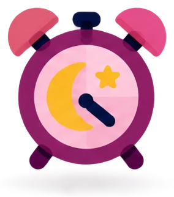
No escribas de madrugada ni en horas de descanso. En el correo puedes programar el envío.
Un mensaje al grupo de clase a las 2:00 → mejor a las 18:00.
Si escribes a muchas personas que no se conocen, usa CCO. Así no muestras sus direcciones.
Un bulo es una noticia falsa que se difunde para engañar. Antes de reenviar algo, comprueba que es verdad.
Responde citando el mensaje. Así todos saben a qué contestas.
2.5 · Comportamiento digital
No uses expresiones ofensivas sobre:
En Internet no eres anónimo del todo: la policía puede saber quién escribe.
2.5 · Comportamiento digital
Un troll es una persona que provoca en Internet para crear peleas. No le contestes.
2.5 · Comportamiento digital
Lo protege la Constitución Española (artículo 18): derecho a la intimidad y a la propia imagen. También lo protegen el Reglamento europeo de protección de datos (RGPD) y la ley española de protección de datos (LOPDGDD).
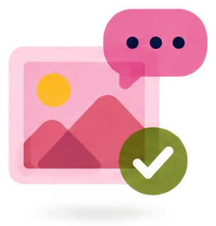
2.5 · Así lo pregunta el examen · pregunta 7 de la demo
Pregunta 7 de la demo de tuCertiCyL (Junta de Castilla y León).
2.5 · Comportamiento digital
2.6
En el examen: 3 preguntas. En la demo: qué pauta evitar para que las empresas encuentren una buena imagen tuya.
2.6 · Identidad digital
La identidad digital es toda la información que hay en Internet sobre una persona: datos, fotos, comentarios, noticias, aficiones y amistades.
Tus perfiles, tus fotos, tus comentarios y tus «me gusta».
Una foto en la que te etiqueta un amigo, la web de tu instituto, una noticia de un periódico.
2.6 · Identidad digital
La huella digital es el rastro que dejas al usar Internet. Crece con el tiempo y es difícil de borrar.
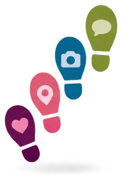
La que dejas a propósito: publicaciones, comentarios, «me gusta», formularios, aceptar cookies.
La que se recoge sin que te des cuenta: las webs que visitas, tu dirección IP, tu ubicación.
La reputación online es la opinión que los demás se forman de ti por lo que encuentran en Internet.
2.6 · Identidad digital
2.6 · Identidad digital
El mundo dentro y fuera de Internet está conectado. Lo que publicas lo leen personas reales y afecta a tu vida diaria.
Muchas empresas miran las redes sociales de las personas que se presentan a un puesto.
Una trabajadora de una guardería de Estados Unidos perdió su empleo. Había dicho en un vídeo de Facebook que odiaba estar rodeada de niños.
Un mensaje ofensivo puede acabar en una denuncia.
El acoso por Internet hace daño fuera de la pantalla.
Con una captura de pantalla, algo «privado» deja de serlo.
Un perfil profesional cuidado o un proyecto publicado pueden darte un trabajo.
2.6 · Identidad digital
2.6 · Identidad digital
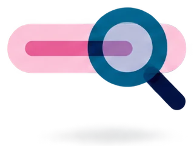
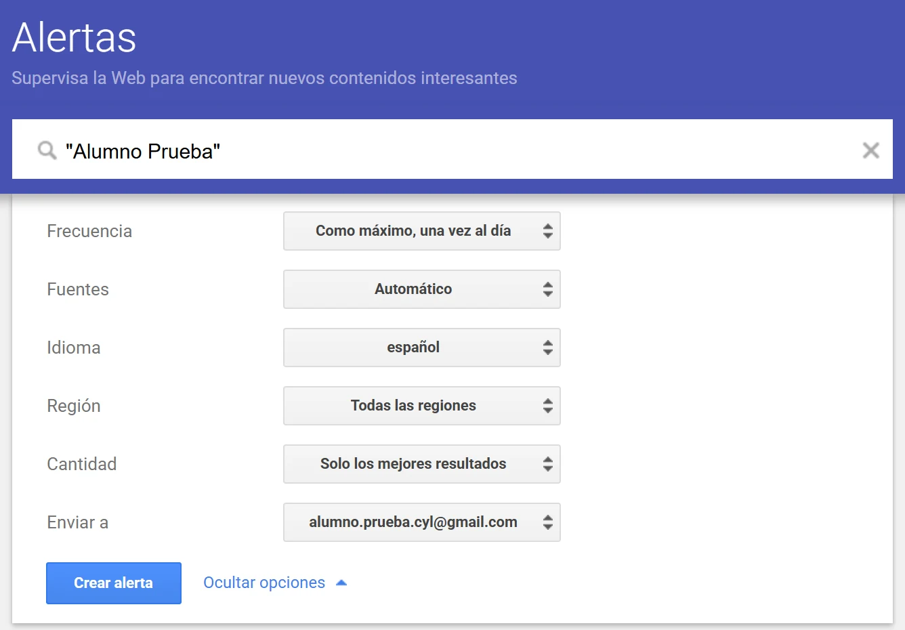
2.6 · Así lo pregunta el examen · pregunta 8 de la demo
Pregunta 8 de la demo de tuCertiCyL (Junta de Castilla y León).
2.6 · Identidad digital
Repaso del área 2
Repaso del área 2 · preguntas del curso «Soy competente digital», CyL Digital
Fin del tema 2
Interactuar
Compartir
Participación ciudadana
Colaborar
Comportamiento digital
Identidad digital
Si te falta alguna competencia, vuelve a su Comprueba y repítelo hasta acertar las 3 preguntas.
Basado en el curso «Soy competente digital», de CyL Digital (Junta de Castilla y León), CC BY-NC. Preguntas 4 a 9 de la demo de tuCertiCyL. Curso: CC BY-NC-SA 4.0.